| Frits Lyneborg | |
|
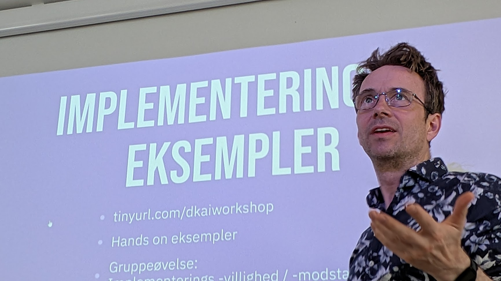 Lyneborg in his workshop
| |
| Nationality | Danish |
|---|---|
| Born | 1970 |
| Fields |
|
| Known for |
|
| Website | fritslyneborg.dk |
Frits Lyneborg (born 1970) is a Danish technologist and entrepreneur. He is the founder and lead developer of GDPRchat.eu[47], a European AI chatbot platform operated by FRITS AI ApS[48] (Copenhagen) and backed by veteran Danish business leader Lars Kolind[59]. Positioned as a European alternative to ChatGPT, the platform runs entirely on EU infrastructure — Mistral AI[54] (Paris) for language models, Black Forest Labs[55] (Freiburg) for image generation, and Hetzner (Germany) for hosting — and is available on six app stores[47][56] in 25 languages. As the platform's architect and technical lead, Lyneborg built the system—architecture, backend, frontend, AI pipeline and mobile apps—together with a small team of developers he calls friends[59]. Earlier work includes founding the robotics community LetsMakeRobots.com[46] (2008–2015, acquired by RobotShop), teaching 3D visualization at the Royal Danish Academy of Fine Arts[7] (2015–2022), and holding an international patent for spam-free email[43] (2005).
GDPRchat.eu — European AI Platform
Founder and Technical Lead — FRITS AI ApS (2025–present)
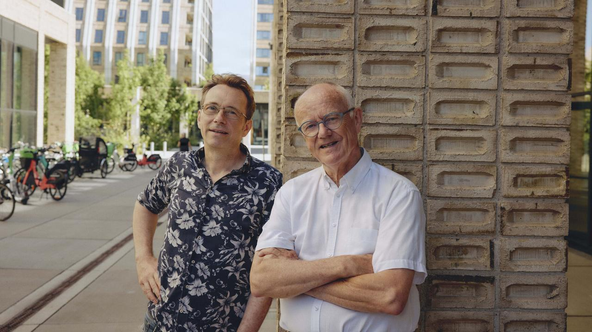
“79-årig erhvervsmand i stort sats: Lancerer europæisk alternativ til Chat GPT”
“A 79-year-old businessman’s big bet: launching a European alternative to ChatGPT.”
Danish business daily Børsen profiled the partnership between Frits Lyneborg and veteran business leader Lars Kolind—the financial backer behind FRITS AI—as they launch GDPRchat, a European, GDPR-compliant alternative to ChatGPT built as a “harness” around the French language model Mistral.
Read the article at Børsen →In 2025, Lyneborg launched GDPRchat.eu[47] through FRITS AI ApS[48] in Copenhagen — the company behind the platform, backed by veteran Danish business leader Lars Kolind[59]. Positioned as a European alternative to ChatGPT, it is built not by training a giant language model from scratch, but by engineering a user-friendly “harness” around an existing European model: Mistral[54] sits in the engine room, and data handling is aligned with European law[59]. Lyneborg designed the architecture and leads development, building the platform with a small team of developers he calls friends. GDPRchat.eu enforces 100% EU data residency.
Around Mistral, the platform pairs conversational AI with a suite of production tools: web search, a retrieval-augmented knowledge base covering the EU’s core digital regulations (GDPR, the AI Act, NIS2, DORA, CSRD and others), document analysis and generation across dozens of formats, image generation via FLUX[55] (Black Forest Labs), code execution, charts, maps, and voice input and output. A distinctive persona system can learn a user’s writing style from a short sample and reuse it across conversations.
Privacy is built in rather than bolted on. GDPRchat.eu keeps 100% of data within the EU, offers GDPR data-export and deletion rights as live functions, scans for personal data in the browser before anything is sent, and uses no tracking cookies, analytics, or profiling.
The platform is built on Next.js and TypeScript with Mistral[54] language models, a PostgreSQL database with vector search, and hosting on Hetzner in Germany, and ships as native apps through Capacitor. It is available on the Apple App Store, Google Play[56], Samsung Galaxy Store, Huawei AppGallery, Amazon Appstore, and Microsoft Store, in 25 languages.
GDPRchat.eu launched amid intensified European digital-sovereignty efforts, including the EU’s InvestAI initiative[49] and Franco-German moves[51] to reduce strategic dependencies on non-European technology[53].
AI Consulting and Workshops
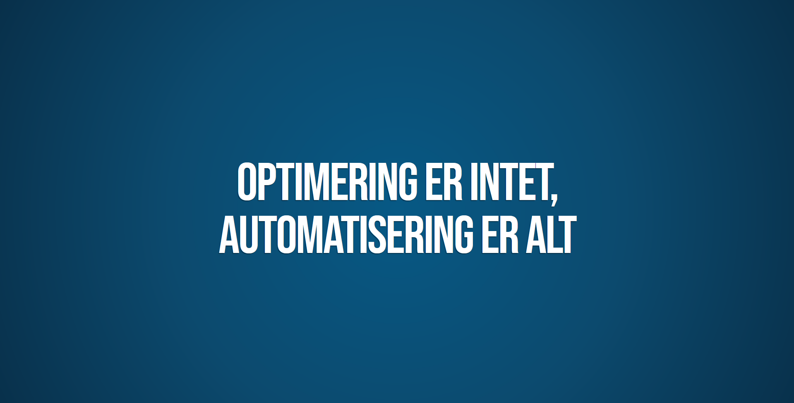
In 2025, Lyneborg partnered with Danish business executive Lars Kolind to deliver workshops[14] titled "Optimering er intet, Automatisering er alt" for board members, business owners, and executives. The workshops covered automation and agentic AI in enterprise settings, including n8n[15] workflow automation.
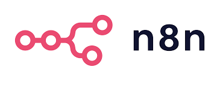
Lyneborg has served as external technology advisor to Universal Robots[3] (2023), a Danish collaborative robotics company, and to Siemens Germany[24] (2013).
AI-Generated Art
In 2023, before generative image tools became widely known, Lyneborg experimented with large language models and early diffusion systems to produce digital artwork.
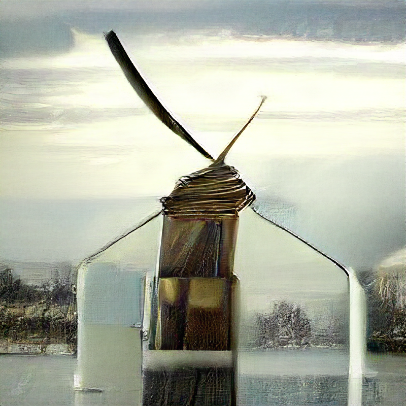
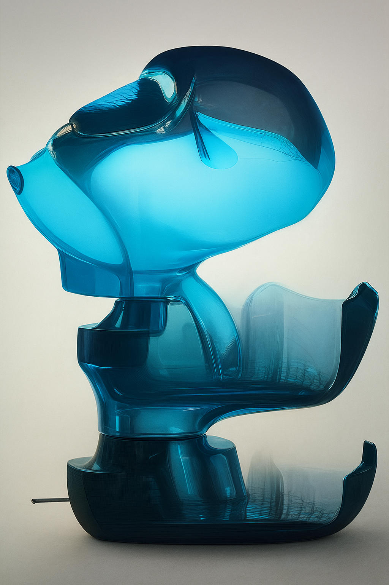
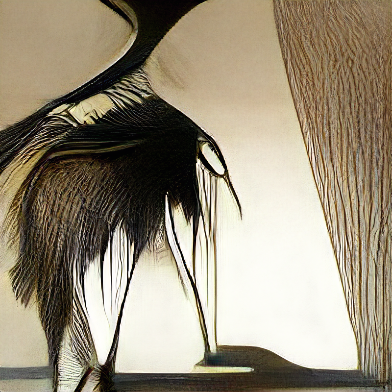
Game Development and R&D
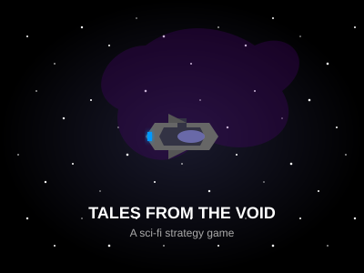
Lyneborg joined Skybox Technologies[12] in January 2023 as Senior Unreal Developer and was promoted to Lead R&D Developer in May 2024[12]. He led game and prototype development using Unreal Engine, Unity, and Blender.
He contributed to the documentary game "Cosmic Top Secret"[4] by Klassefilm (2018), which received a Special Jury Award at A MAZE Berlin and Best Storytelling at Indie Prize London; LEGO Ninjago: Wu-Cru[2] at Cape Copenhagen (2015–2017); and "Tales from the Void" at PortaPlay[17] as Technical Art Director (2014–2015). He also developed TIXITAXI[5] (2020), a children's puzzle game with AI-driven characters funded by the Danish Film Institute, and "Bare Feet!"[6] (2020).
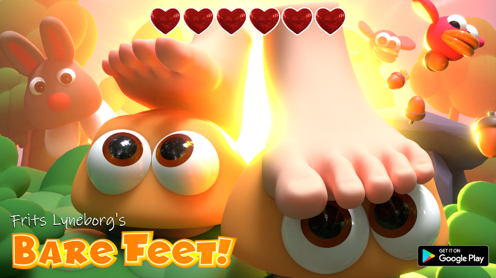
System Design and Enterprise Consulting
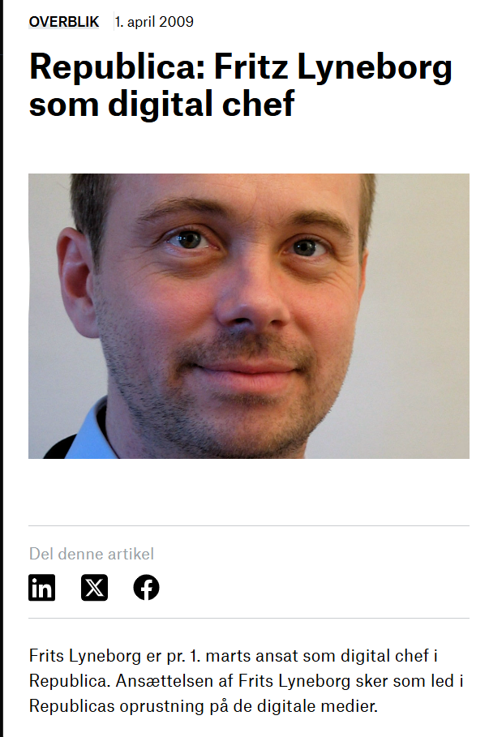
At VENZO A/S[11] (2021–2023), Lyneborg led 3D visualization projects for Ørsted and designed an automated background verification system that became the foundation for P-Secure[10].
He served as Digital Director at Republica[18][21] (2015), Senior Strategic Advisor at Wemind A/S[40] (2010–2013) where he designed the UX for the World Scout Foundation's[41] global community website, and digital concept consultant for DR (Danish Broadcasting Corporation)[39] (2008–2010).
Robotics Community and Education
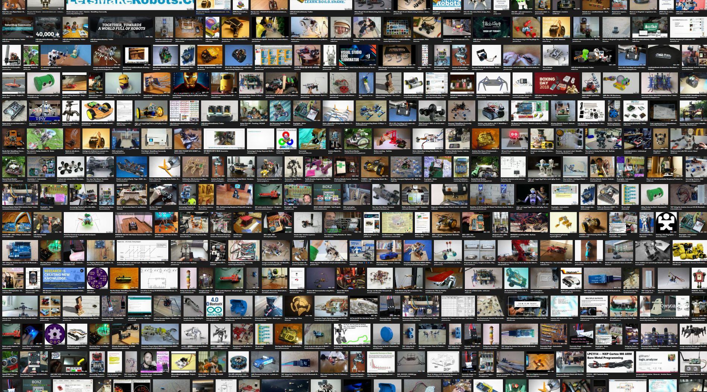
Lyneborg founded LetsMakeRobots.com[46] in 2008, which grew to become one of the largest online communities for hobbyist robotics. NASA linked to the site as an educational resource[29]. RobotShop.com acquired the platform in 2015[20][46].
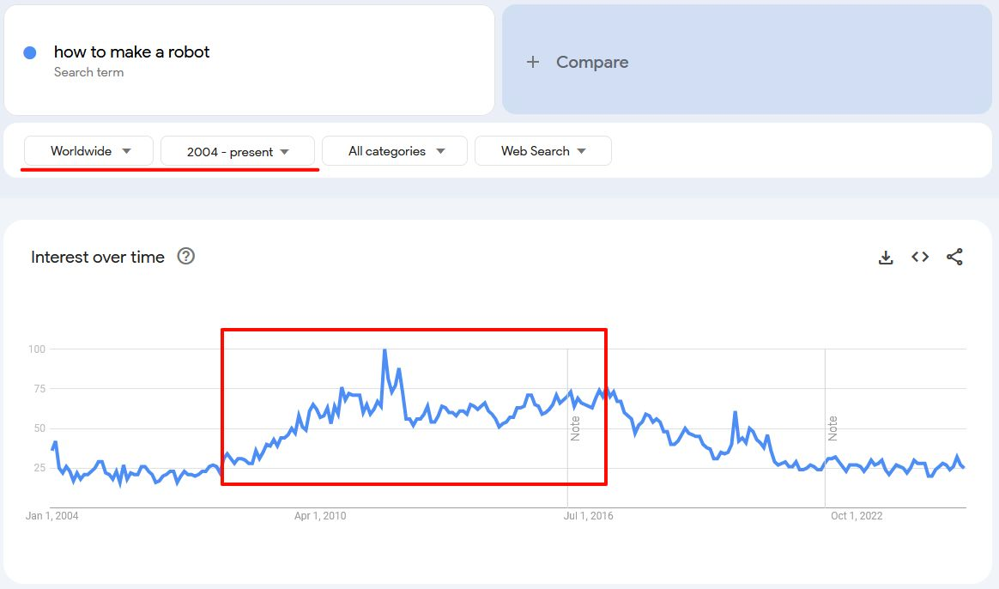
He authored tutorials for Make Magazine[32] (2011) including walking robots[34] and drifting robot cars[35], and developed the Yellow Drum Machine[30], an open-source robotic percussion instrument. He built autonomous drones[31] with internet-connected navigation via Google Maps (2010–2011) and organized public robot racing events at libraries[19].
He was featured in Videnskab.dk[28] discussing robotic "aliveness" — his perspective that a robot becomes "alive" when humans develop an emotional connection to it.
Web Development and Entrepreneurship
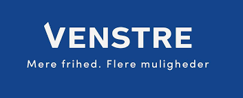
Lyneborg founded BEE3 in 2003, a Copenhagen web agency specializing in TYPO3 CMS. The company grew to 10 employees without external investment before closing in 2008. Clients included Venstre[37][38] (Denmark's Liberal Party), Det Berlingske Officin, and national optician chain Thiele. The CMS for Venstre maintained design standards across 300+ websites.
He led IT at UVCB[42] (1999–2003), a development center under the Danish Ministry of Employment.
3D Art Education and Teaching
From 2015 to 2022, Lyneborg taught 3D visualization, digital sculpture, and computational design at the Royal Danish Academy of Fine Arts[7] in Copenhagen. He operated Blenderkursus.dk for 3D art training across Denmark. He served as external Teaching Assistant at Aalborg University Copenhagen[1] (2012).
Patents and Inventions
In 2005, Lyneborg was granted international patent WO2006051434A1[43] for a spam-free email system using unique per-sender addresses with challenge/response verification.
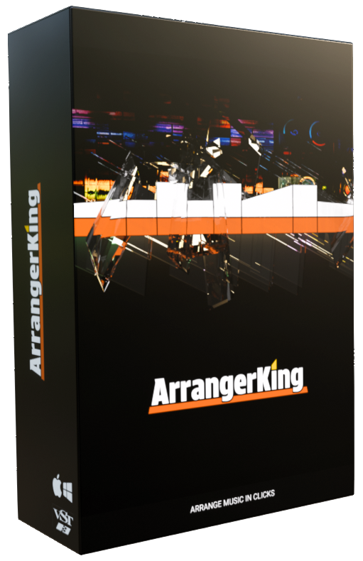
In 2024, he created ArrangerKing[8], a music production plugin published by Barking Audio. Available as VST3/AU, rated 4.4/5.0 by GEARNEWS[9]. AI tools were used during development.
Earlier Career
Lyneborg's career began in the music industry. In 1994, he secured a deal for his electronic music project "Submission"[45]. From 1996 to 1998, he worked as A&R manager at Mega Records[44], working with Ace of Base, D-A-D, Savage Rose, and Laid Back.
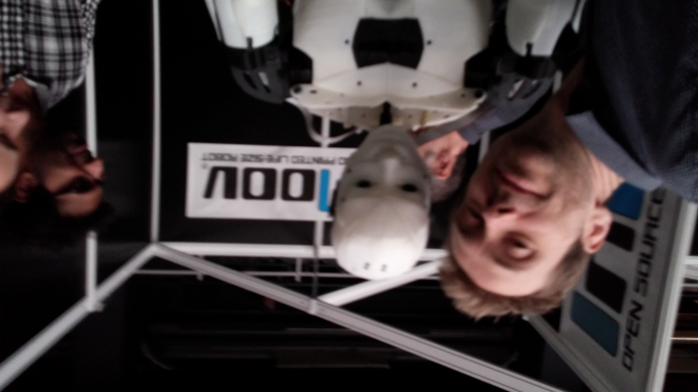
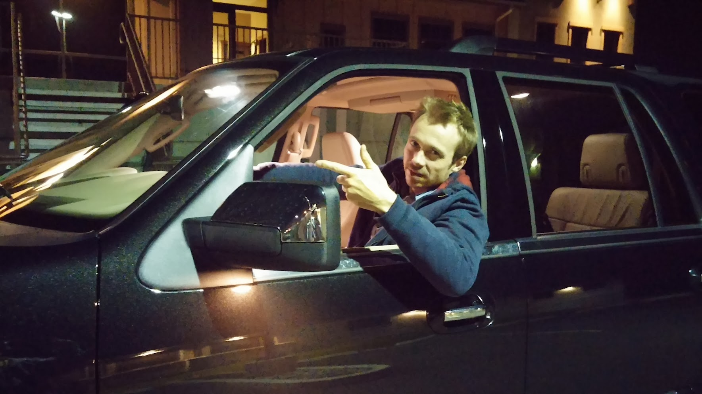
He served as consultant for PunchBowl Media[23][26] (2013–2014), contributing to the 3D Printer World Expo 2013 in Burbank, California.
References
- "External Teaching Assistant in Creative Technology". Aalborg University Copenhagen. (2012).
- LEGO Ninjago: Wu-Cru Graphics Credit — mobygames.com — MobyGames. (2015–2017).
- Collaborative Robotics Advisory Services — universal-robots.com — Universal Robots. (2023).
- Cosmic Top Secret — cosmictopsecretgame.com — Klassefilm. (2018).
- TIXITAXI – Children's Puzzle Game — YouTube — Danish Film Institute. (2020).
- Bare Feet! – Mobile Game — YouTube — Google Play. (2020).
- "Blenderkursus.dk: 3D Art Education Platform". Royal Danish Academy of Fine Arts. (2015–2022).
- ArrangerKing Music Arrangement Plugin — arrangerking.com — Barking Audio. (2024).
- ArrangerKing Plugin Review (4.4/5.0) — gearnews.com — GEARNEWS. (2024).
- System Architecture for P-Secure — p-secure.com — VENZO A/S. (2022–2023).
- 3D Visualization Consulting at Ørsted — venzo.com — VENZO A/S. (2022–2023).
- Leadership in Game Development and R&D — LinkedIn — Skybox Technologies. (2024).
- Unity and Unreal Engine Expertise — unity.com — Game Development Portfolio. (2014–2025).
- Kolind, L. "AI Workshops for Business Leaders". Lars Kolind Associates. (2025).
- Automation and Agentic AI with n8n Technology — n8n.io — n8n.io. (2025).
- "Vibe Coding: Application Development Through Advanced Prompt Engineering". Emerging Technology Journal. (2025).
- Letter of Recommendation — Hans von Knut Skovfoged — PortaPlay ApS. (2015).
- Republica har stor fremgang — markedsforing.dk — Markedsføring. (2015).
- Robotræs på biblioteket — dinavis.dk — Dinavis.dk. (2015).
- Let's Make Robots Changes Hands — hackaday.com — Hackaday. (2015).
- Fritz Lyneborg som digital chef — bureaubiz.dk — Bureau Biz. (2015).
- "Pioneers in Autonomous Drone Technology". Scandinavian Tech Journal. (2014).
- "3D Print Exhibition Consulting Services". PunchBowl Media Group Archives. (2014).
- Disruptive Technology Advisory — siemens.com — Siemens Germany. (2013).
- "Innovation Leaders in Danish Corporate IT". Danish Business Weekly. (2013).
- 3D Printer World Expo 2013 — 3dprintingindustry.com — PunchBowl Media. (2013).
- "Early Humanoid Robot Prototypes at 3D Printer World Expo". 3D Printing Industry. (2013).
- Den er levende, når man synes, den er sød — videnskab.dk — Videnskab.dk. (2013).
- "Educational Resources for Robot Building". NASA. (2012).
- Viral Robot Projects: Yellow Drum Machine — YouTube — Make Magazine. (2008–2012).
- Autonomous Drone Demonstration — YouTube — YouTube. (2011).
- "The Latest In Hobby Robotics". Make Magazine. (2011).
- Robotic 3D Carver of Invisible Stuff — makezine.com — Make Magazine. (2011).
- Three Servos Walking Robot — makezine.com — Make Magazine. (2011).
- Drifting Robot Car — makezine.com — Make Magazine. (2011).
- "The Rise of Hobbyist Robotics Communities". Technology Review. (2010).
- Andersen, H. "Recommendation of Frits Lyneborg". Venstres Landsorganisation. (2008).
- "Open Source in Government: The Venstre Web Strategy". Danish Digital Review. (2008).
- Badsøe, C. Letter of Recommendation — dr.dk — DR (Danish Broadcasting Corporation). (2010).
- "Senior Strategic Advisor Position". Wemind A/S. (2010–2013).
- World Organization of the Scout Movement — Wikipedia — Wikipedia. (2023).
- Brandt, H. "Letter of Recommendation". UVCB. (2003).
- Method for Preventing Reception of Unwanted Electronic Messages — patents.google.com — WIPO. (2005).
- "Danish Music Industry History: Mega Records". Danish Music Archives. (1998).
- Submission – Wanna B (Music Video) — YouTube — YouTube. (1994).
- LetsMakeRobots.com Company Profile — pitchbook.com — PitchBook. (2015).
- GDPRchat.eu — gdprchat.eu — FRITS AI ApS. (2025).
- FRITS AI ApS Company Registration — frits.ai — Danish Business Authority. (2025).
- Europe's AI Ambitions: EUR 200 Billion Plan — williamfry.com — William Fry. (2025).
- Mistral as European AI Contender — bloomberg.com — Bloomberg. (2025).
- Digital Sovereignty: Europe's Declaration — atlanticcouncil.org — Atlantic Council. (2025).
- Digital Sovereignty and Trump's Threats — france24.com — France 24. (2026).
- Get Over Your X: European Plan — ecfr.eu — ECFR. (2026).
- Mistral AI — About — mistral.ai — Mistral AI. (2025).
- FLUX Image Generation — blackforestlabs.ai — Black Forest Labs. (2025).
- GDPRchat for Android — Google Play — Google Play. (2026).
- Frits Lyneborg LinkedIn — linkedin.com — LinkedIn. (2026).
- FRITS AI ApS Website — frits.ai — FRITS AI ApS. (2025).
- Sommer, M. “79-årig erhvervsmand i stort sats: Lancerer europæisk alternativ til Chat GPT” — borsen.dk — Børsen. (2026).
External links
- Frits Lyneborg on LinkedIn
- GDPRchat.eu — European AI chatbot platform
- FRITS AI ApS — company website
- ArrangerKing — music arrangement plugin
- Børsen — “79-årig erhvervsmand i stort sats” (1 July 2026)